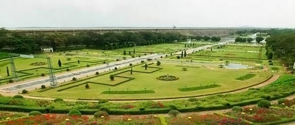

MYSORE
1.Mysore Palace


Of the seven palaces that dot the cityscape of Mysore, this royal edifice is the most splendid one. The palace had its
foundation laid way back in the 14th century by the Wodeyars or Wadiyars, the royal family of Mysore. It is believed
that Yaduraya Wodeyar, the first ruler of the Mysore Kingdom, built a palace in Puragiri aka the Old Fort during his
reign. This palace, which is believed to be the predecessor of the current palace, has been demolished and reconstructed
multiple times over a period of six centuries.
Above the central arch, there is a divine sculpture of Gajalakshmi – the goddess of wealth with two elephants. In
addition to the three entrances, located on the eastern, southern, and western sides, the palace features several
secret tunnels. There is also a group of temples at the palace, built from the 14th to the 20th century.
2.Brindavan Garden

The Brindavan Gardens, spread over 60 acres, is located at a distance of 21 km away from Mysore. Built across
the notable river of India, Cauvery, it took around five years to complete the project. The well-synchronised
fountain show with music, boating and well-manicured grass with flowerbeds are some of the top experiences of
Brindavan Garden.Constructed in 1932 by the Diwan of Mysore, Sir Mirza Ismail, Brindavan Garden is visited by
millions of tourists every year. Divided into two parts, north and south, boating facility offered by the
Karnataka State Tourism Development Corporation which connects the two parts along with a walkway bridge.
The illumination timings at Brindavan Gardens Mysore differ with the change of months. The illumination timings
from the month of January to September are from Monday to Friday at 6.30 p.m. to 7.30 p.m. and 7.00 p.m.
to 7.55 p.m. on weekdays it is from 7 p.m. to 8.55 p.m. During the month of October to December, the timings are
from 7 p.m. to 8.55 p.m. on weekdays while on Saturday and Sunday, it is from 7 p.m. to 8.25 p.m.
3.Chamundeshwari Temple


Sri Chamundeshwari Temple is about 13 kms from Mysuru, which is a prominent city in Karnataka State, India.
Sri Chamundeshwari Temples is famous not only in India but also abroad. Atop of the hill the famous Sri Chamundeswari
Temple. ‘Chamundi’ or ‘Durga’ is the fierce form of ‘Shakti’. She is the slayer of demons, ‘Chanda’ and ‘Munda’ and
also ‘Mahishasura’, the buffalow-headed monster.
Sri Chamundeshwari Temples rises to a height of 3,489 feet MSL and is visible from a distance itself while traveling
towards Mysuru. There is a good motorable road to the top. Besides from Mysuru side, there is also a motorable road
from its rear side, the Nanjangud side. Bus facilities are available to visit the hills. Karnataka State Road Transport
Corporation (KSRTC) operates regular bus services every day for the convenience of pilgrims and others.
4.Lalitha Mahal Palace

The Lalitha Mahal is the second largest palace in Mysore. It is located near the Chamundi Hills, east of the city of
Mysore in the Indian state of Karnataka. The palace was built in 1921 at the orders of His Highness Krishnaraja Wodeyar
IV, the Maharaja of Mysore for the exclusive stay of the Viceroy of India. Built on a raised ground, the palace was
fashioned on the lines of the St. Paul’s Cathedral in London and is one of the imposing structures of the Mysore city.
The palace has exquisitely designed viceroy room, a banquet hall, a dancing floor and an Italian marble staircase
(has an arresting curve) and also embellished with small ornamentations, which are said to be replicas from various
palaces in Britain. The full length portraits of the Wodeyar Kings, Italian marble floors and Belgian crystal chandeliers,
cut glass lamps, heavy ornate furniture, mosaic tiles and a couple of exquisite Persian carpets gives the palace its regal
ambience.
5.Chennakesava Temple

The Chennakesava Temple, also referred to as Chennakeshava Temple and Keshava Temple, is a Vaishnava Hindu temple on the
banks of River Kaveri at Somanathapura, Karnataka, India. The temple was consecrated in 1258 CE by Somanatha Dandanayaka,
a general of the Hoysala King Narasimha III. It is located 38 kilometres (24 mi) east of Mysuru city.
A few of the significant historical dates and circumstances around the Kesava temple is inscribed in eight stones
in different parts of South India. Four of the inscriptions are found on soapstone slabs at the entrance of the temple.
Two inscriptions are found in the ceilings of the veranda that surrounds the temple, one near the southeast corner and
the other about the northwest corner. Another inscription is found near Harihareshwara Temple on the banks of the
Tungabhadra River. The eighth inscription is found in the Shiva temple at the periphery of the original land grant,
the Panchalinga temple.
6.Venugopala Swamy Temple